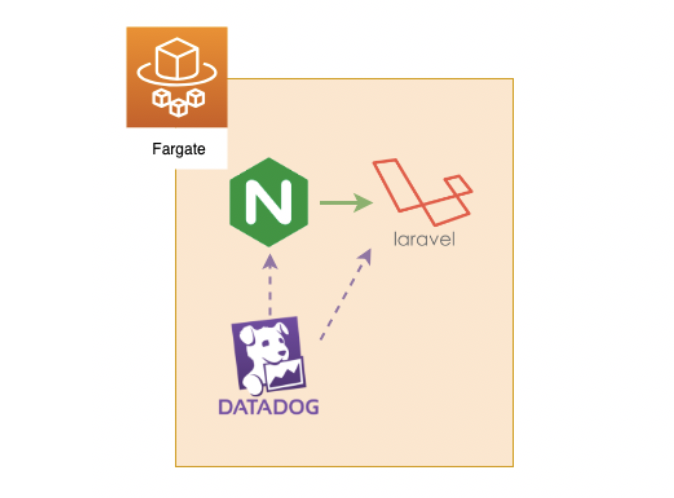

ECSとの連携

ECS Fargate上でDatadogを動かす¶
DatadogをECS Fargate で動かす場合はサイドカーとして動かします。
サイドカーとは
復数のコンテナを1つのグループとして協調して動かすことをサイドカーと呼びます。
乗り物のバイクのサイドカーのように、復数を一緒に動かすことから来ました。
ParameterStoreへDatadog APIキーの登録¶
前の章で使用したDatadog APIキーを使いまわします。
プロダクション環境では誰がどのAPIキーを使っているかわからなってしまうので都度発行しましょう。
https://app.datadoghq.com/account/settings#api から先程作成したAPIキーを控え、ターミナルへ展開します。
$ export DD_API_KEY=6d9xxxxxxxxxxxxxxxxxxxx $ echo $DD_API_KEY 6d9xxxxxxxxxxxxxxxxxxxx
DatadogのAPIキーをParameterStoreへ handson/datadog/key の名前で格納します。。
$ aws ssm put-parameter --name "/handson/datadog/key" --value ${DD_API_KEY} --type String
{
"Version": 1
}
コンテナ定義へDatadogコンテナを追加¶
今回は一箇所変更するだけです。
terraform/container_definitions.json の最後にDatadogコンテナの定義を追記します。
- } + }, + { + "name": "datadog", + "image": "datadog/agent", + "cpu": 10, + "memory": 256, + "logConfiguration": { + "logDriver": "awslogs", + "options": { + "awslogs-region": "${region}", + "awslogs-group": "/${name}/ecs", + "awslogs-stream-prefix": "datadog" + } + }, + "secrets": [ + { + "name": "DD_API_KEY", + "valueFrom": "/handson/datadog/key" + } + ], + "environment": [ + { + "name": "DD_APM_ENABLED", + "value": "true" + }, + { + "name": "ECS_FARGATE", + "Value": "true" + }, + { + "name": "DD_TAGS", + "value": "env:${app_env}" + } + ] + } ]
デプロイ¶
terraformを立ち上げているコンテナに戻り、 apply でデプロイを行います。
$ terrraform apply
少し時間を置いてから出力されたDNSへアクセスしてみましょう。